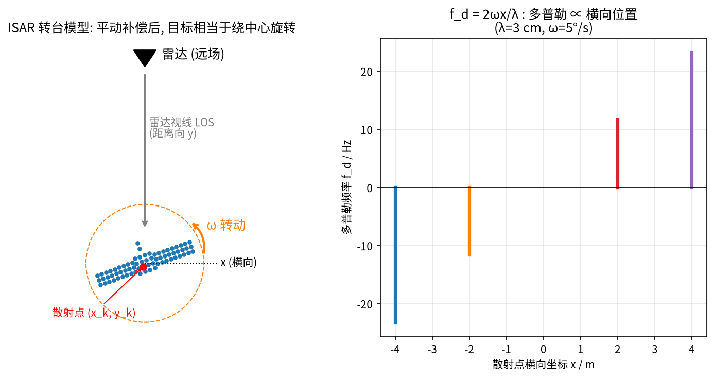
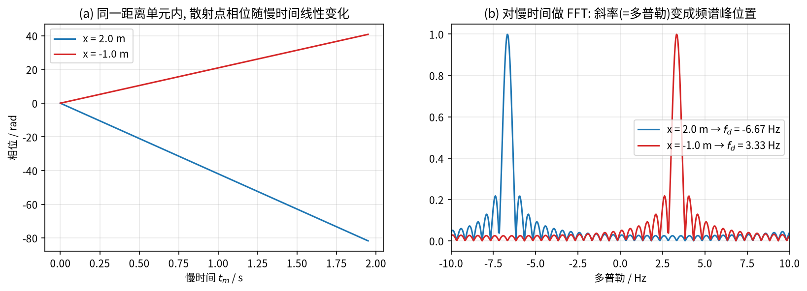
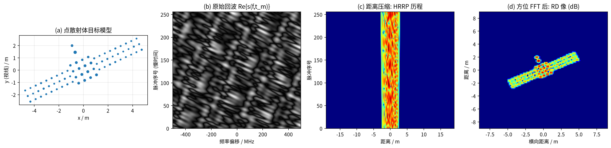
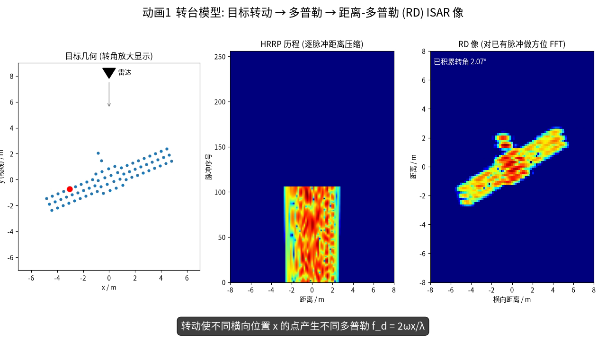
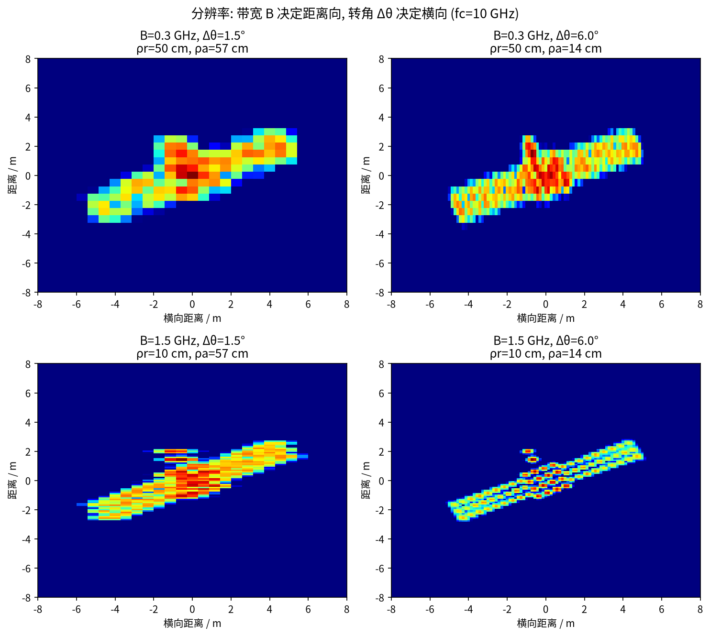
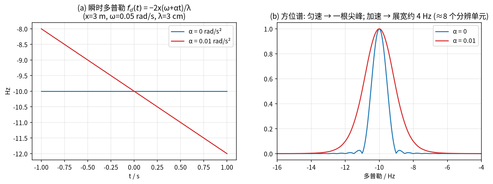
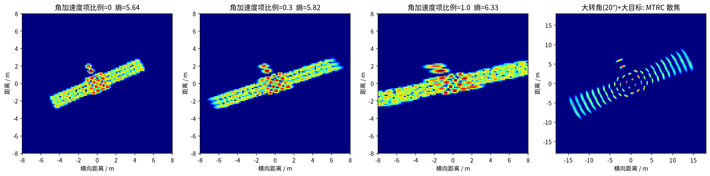
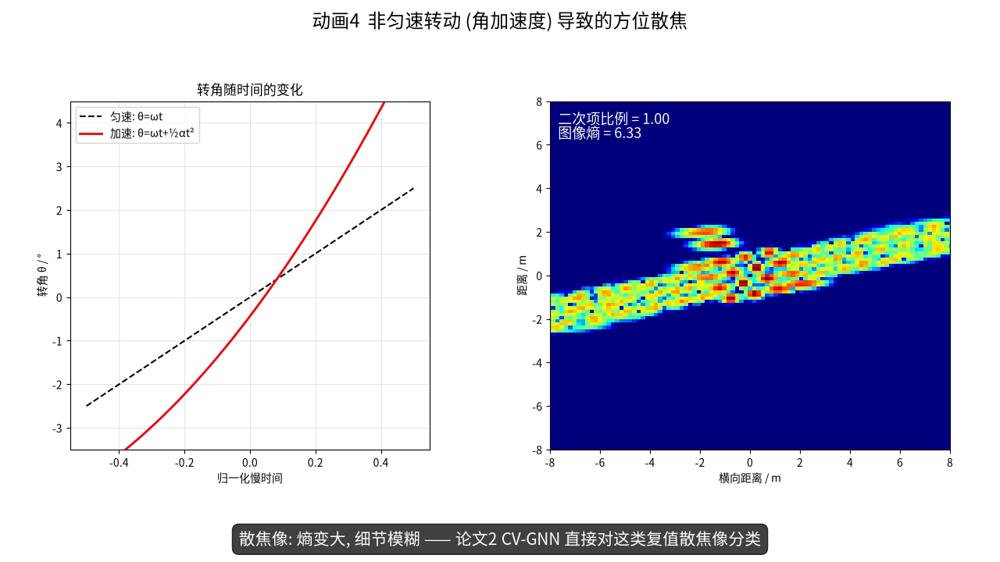

第 2 章 ISAR 成像：转台模型、距离-多普勒算法与分辨率¶
本章目标
- 理解“雷达不动、目标转动”为什么能等效成一个长天线（合成孔径），即 ISAR 的基本原理；
- 从多普勒效应出发，一步步推出“多普勒 ∝ 横向坐标”，掌握转台模型与距离-多普勒（RD）成像的完整流程，能用 Python 从点目标仿真出 ISAR 像；
- 推导并记住横向分辨率 \(\rho_a = \lambda/(2\Delta\theta)\)，理解带宽与转角各管哪个方向，会做数值估算；
- 直观理解散焦（非匀速转动）、越分辨单元走动（MTRC）和运动补偿，并能用数字估计“糊了几个格子”；了解散射中心模型。
基础回链
本章用到的基础： 相位与距离 \(\Delta\varphi = 4\pi\Delta R/\lambda\)（→ 第 0.1 节）、傅里叶变换与频率分辨率 \(1/T\)（→ 第 0.3、0.5 节）、采样与混叠（→ 第 0.4 节）、距离压缩与 \(\rho_r = c/2B\)（→ 第 1.4 节）。
2.1 SAR 与 ISAR：谁在动？¶
- SAR（合成孔径雷达）：雷达装在飞机/卫星上运动，对静止地面成像；
- ISAR（逆合成孔径雷达）：雷达通常固定（地基雷达，或 CV-GNN 中的天基雷达），目标运动（卫星、飞机、舰船）。真正提供横向分辨率的是目标相对雷达视线的转动。
本文 7 篇论文的对象几乎都是空间目标（卫星、空间站），REMI 还用到了飞机数据。
直觉
类比：用手机拍全景照。 一根天线“看一眼”只能看到很粗的横向细节；如果让天线沿一条长长的路径移动、在许多位置分别拍照再“拼起来”，就相当于有了一根很长的天线（合成孔径）。SAR 是雷达自己走，ISAR 是让目标转——相对运动是一样的，就像你站着不动、让转盘上的物体转一圈，也能从各个角度看它。
2.2 多普勒效应与转台模型¶
2.2.1 多普勒效应：相位转得越快，频率越高¶
直觉
类比：救护车的鸣笛。 救护车朝你开来时音调变高，远离时音调变低。雷达里也一样：目标靠近，回波频率略高于发射频率；远离则略低。这个频率差就叫多普勒频率 \(f_d\)。
机理（用相位来理解，不需要相对论）。 由式 (1.4)，回波相位为 \(\varphi(t) = -4\pi R(t)/\lambda\)。若目标以径向速度 \(v\) 运动，\(R(t) = R_0 + vt\)，则相位随时间线性变化。第 0.1 节说过，“相位线性变化”就是“箭头匀速旋转”，旋转速度就是频率：
符号说明：\(v = \mathrm{d}R/\mathrm{d}t\) 为径向速度（远离为正）；\(\lambda\) 为波长；负号表示远离时 \(f_d<0\)、靠近时 \(f_d>0\)。
例题
例题 2.1（多普勒有多大）。 \(f_c = 10\) GHz（\(\lambda = 3\) cm），飞机以 \(v = 300\) m/s 朝雷达飞来：\(|f_d| = 2\times300/0.03 = 20\,000\) Hz \(= 20\) kHz。相比 10 GHz 的载频只是“零头”，但经过 I/Q 解调去掉载频后（→ 第 0.2 节），就能清楚地测出来。
2.2.2 转台模型¶
目标的运动可以分解为平动（整体靠近/远离雷达）和转动（绕自身某点旋转）。平动只让所有散射点的距离同时变化，对成像无用且有害，需要先补偿掉（2.6 节）。补偿后，目标就像放在一个转台上绕中心旋转。
建立坐标系：雷达在远场，视线（LOS）沿 \(y\) 轴；目标上第 \(k\) 个散射点坐标 \((x_k, y_k)\)，目标转过角度 \(\theta(t_m)\)（\(t_m\) 为慢时间，即第 \(m\) 个脉冲的发射时刻）。远场近似下该点到转台中心参考面的距离为
式 (2.2) 是二维旋转的投影公式：把点 \((x_k, y_k)\) 转过 \(\theta\) 后，它在视线方向（\(y\) 轴）上的坐标就是 \(y_k\cos\theta + x_k\sin\theta\)。
小角度近似。 匀速转动时 \(\theta = \omega t_m\)（\(\omega\) 为转速，rad/s）。ISAR 的积累角一般只有几度，\(\theta \ll 1\)，于是 \(\cos\theta\approx 1\)、\(\sin\theta\approx\theta\)（\(\theta = 5^\circ = 0.087\) rad 时，\(\cos\theta = 0.996\)、\(\sin\theta = 0.0872\)，误差都在 0.4% 以内）：
这个式子很好读：\(y_k\) 是固定不变的部分，决定散射点落在哪个距离单元；\(x_k\omega t_m\) 随时间线性增长，等价于一个径向速度 \(v_k = x_k\omega\)。也就是说，横向坐标 \(x_k\) 越大，这个点“看起来”朝雷达跑得越快，就像转盘边缘比中心转得快。
代入式 (2.1)，把 \(v\) 换成 \(x_k\omega\)，得到第 \(k\) 个点的多普勒频率：
关键公式
关键结论：多普勒频率正比于散射点的横向坐标 \(x_k\)（符号取决于约定）。于是：
- 沿 \(y\)（距离）方向：用带宽 \(B\) 分辨（第 1 章）；
- 沿 \(x\)（横向/方位）方向：用多普勒分辨 —— 对慢时间做 FFT，频率轴就是横向坐标轴。
例题
例题 2.2（转台多普勒）。 \(\lambda = 3\) cm，卫星以 \(\omega = 0.05\) rad/s 转动。横向坐标 \(x=2\) m 的点：\(f_d = -2\times0.05\times2/0.03 = -6.67\) Hz；\(x=-1\) m 的点：\(f_d = +3.33\) Hz。两个点的多普勒相差 10 Hz，FFT 后会在频率轴上落到不同位置（图 2-1b）。和例题 2.1 的 20 kHz 相比，转动产生的多普勒只有几赫兹，非常“细”，所以需要较长的观测时间才能分辨（见 2.4 节）。


2.3 距离-多普勒（RD）成像算法¶
把频域（或去斜后）回波写成二维矩阵：快时间对应的频率 \(f\) × 慢时间 \(t_m\)：
符号说明：\(f\) 为快时间频率（在 \([f_c - B/2, f_c + B/2]\) 内取 \(N_f\) 个值），\(t_m\) 为第 \(m\) 个脉冲的时刻（共 \(N_p\) 个），\(\sigma_k\) 为第 \(k\) 个散射点的复散射系数。数据是一个 \(N_p\times N_f\) 的复数矩阵。
为什么两次 FFT 就能成像：一步步推导。 把式 (2.3) 代入式 (2.5) 的相位：
最后一步把第二项里的 \(f\) 近似为 \(f_c\)（因为 \(B \ll f_c\)，例如 1 GHz \(\ll\) 10 GHz），并用 \(f_c/c = 1/\lambda\)。于是每个散射点的回波分解成两个因子的乘积：
- 因子 ① 只含 \(f\)：对 \(f\) 做 IFFT，峰出现在距离 \(y_k\) 处；
- 因子 ② 只含 \(t_m\)：它是频率为 \(f_{d,k}\) 的旋转箭头，对 \(t_m\) 做 FFT，峰出现在多普勒 \(f_{d,k}\) 处。
因子 ① 就是第 1 章的式 (1.14)；因子 ② 的“频率 → 峰位置”见第 0.3 节。两个峰的位置合起来就是 \((x_k, y_k)\)，所以这个点被“画”到了图像的正确位置上。
RD 算法因此只有两步：
- 距离压缩：沿 \(f\) 做 IFFT → 每个脉冲得到一条 HRRP，排起来就是“HRRP 历程”；
- 方位压缩：沿 \(t_m\) 对每个距离单元做 FFT → 多普勒（即横向坐标）。
易错点
易错点。（1）推导中用了两个近似：小转角（\(\cos\theta\approx1\)）和窄带（第二项中 \(f\approx f_c\)）。它们不成立时，就会出现 2.5 节的 MTRC。（2）代码中方位向用的是 ifft 而非 fft，只是为了让图像横轴方向与 \(x\) 同号，它和“FFT 后再左右翻转”等价，不影响成像原理。
得到的二维复数矩阵 \(I(x, y)\) 就是 ISAR 像，它的幅度 \(|I|\) 是我们通常看到的图，相位 \(\angle I\) 往往被丢弃（CV-GNN、CvPGT 认为不该丢）。
## code/isar_core.py 中的核心代码（节选）
R = y[None,:]*np.cos(th)[:,None] + x[None,:]*np.sin(th)[:,None] # 式 (2.2)
S = np.einsum('pkf,k->pf', np.exp(-1j*4*np.pi*f[None,None,:]*R[:,:,None]/C), sig) # 式 (2.5)
hrrp = np.fft.fftshift(np.fft.ifft(S*np.hanning(Nf), axis=1), axes=1) # 距离压缩
img = np.fft.fftshift(np.fft.ifft(hrrp*np.hanning(Np)[:,None], axis=0), axes=0) # 方位压缩


▶ 动画 1 转台 → 多普勒 → ISAR 像（38 s）：左为目标转动（转角放大显示），中为逐脉冲累积的 HRRP 历程，右为用已有脉冲做方位 FFT 得到的 RD 像——随着积累转角增大，横向逐渐变清晰。文件：videos/V1_turntable_to_isar.mp4
2.4 分辨率公式¶
距离分辨率已在第 1 章给出：\(\rho_r = c/(2B)\)。
横向分辨率：三步推导。
- 观测总时长为 \(T\)，对慢时间做 FFT 的频率分辨率是 \(\Delta f_d = 1/T\)（→ 第 0.3 节式 (0.9)、第 0.5 节）。
- 由式 (2.4)，横向坐标差 \(\Delta x\) 对应的多普勒差为 \(\Delta f_d = 2\omega\Delta x/\lambda\)，所以 \(\Delta x = \lambda\Delta f_d/(2\omega)\)。
- 令 \(\Delta f_d = 1/T\)，并记积累角 \(\Delta\theta = \omega T\)（成像期间目标总共转过的角度）：
关键公式
\(\rho_a\)：横向（方位）分辨率；\(\lambda\)：波长；\(\Delta\theta\)：积累转角，必须用弧度。
例题
例题 2.3（转多少度才能看清 15 cm）。 接例题 2.2（\(\lambda=3\) cm，\(\omega = 0.05\) rad/s）。两个点横向相距 0.15 m（\(x=2\) m 与 \(x=2.15\) m）：
- 多普勒差：\(\Delta f_d = 2\times0.05\times0.15/0.03 = 0.5\) Hz；
- 要分开 0.5 Hz，需要观测 \(T = 1/0.5 = 2\) s；
- 这段时间内转过 \(\Delta\theta = 0.05\times 2 = 0.1\) rad \(= 5.73^\circ\)；
- 验算式 (2.8)：\(\rho_a = 0.03/(2\times0.1) = 0.15\) m。✓
结论：在 X 波段，目标转大约 6° 就能得到 15 cm 的横向分辨率，与 \(B=1\) GHz 时的距离分辨率 15 cm 相当，图像“横竖一样清楚”。
横向分辨率由波长与积累转角决定，与目标距离无关——这正是“合成孔径”的妙处。
| 参数 | 管哪个方向 | 本文仿真 | 论文中的例子 |
|---|---|---|---|
| 带宽 \(B\) | 距离向 \(\rho_r=c/2B\) | 1 GHz → 15 cm | DB-SSIT：10 GHz → 1.5 cm |
| 转角 \(\Delta\theta\)、波长 \(\lambda\) | 横向 \(\rho_a=\lambda/2\Delta\theta\) | 3 cm, 5° → 17 cm | REMI：17 GHz，Δθ = 4°/5°/6° |
直觉
为什么这和识别有关？ REMI、MLFR 明确把“不同带宽和积累角组合”作为训练集与测试集的差异来源：带宽和转角变了，图像在距离向/横向被拉伸或压缩，同一目标看起来“胖瘦不同”。这就是 REMI 要设计多头 STN 去“校正形变”的原因（第 11 章）。CvPGT 也在对比学习中随机化积累角来模拟分辨率变化。

像素坐标 ≠ 物理尺寸。 RD 像的横轴是多普勒，换算成米需要知道转速 \(\omega\)。实际中 \(\omega\) 往往未知，因此 ISAR 像的横向尺度经常是“未定标”的——同一目标在不同观测中横向尺度不同，这是识别中“尺度形变”的又一来源。
易错点
易错点。（1）\(\Delta\theta\) 代入角度值（例如 5）而不是弧度（0.087），结果会错 57 倍。（2）PRF（脉冲重复频率）决定的是能看到的多普勒范围 \([-\mathrm{PRF}/2, \mathrm{PRF}/2)\)（→ 第 0.4 节，混叠），而不是分辨率；分辨率只看总时长 \(T\)。
2.5 散焦与 MTRC¶
RD 算法的前提是：(a) 匀速转动，(b) 小转角，使每个散射点在整个观测期间都待在同一个距离单元、多普勒为常数。两条前提被破坏，图像就会“糊”：
直觉
类比：拍照时手抖。 快门打开期间（相当于积累时间 \(T\)），如果被拍物体“速度”在变化，它在照片上就不再是一个点，而是一条拖影。对 ISAR 来说，“速度”就是多普勒；多普勒在积累期间一变，横向就拖影。
(1) 非匀速转动 → 方位散焦。 若目标在机动或调整姿态，转角不再是 \(\omega t\)，而是带加速度 \(\alpha\)（rad/s²）：\(\theta(t) = \omega t + \tfrac12\alpha t^2\)。仍用小角度近似 \(R_k \approx y_k + x_k\theta(t)\)，对时间求导：
单个散射点的多普勒随时间线性变化（变成一个“chirp”，与第 1 章的 LFM 同一种结构），FFT 后不再是一个点，而是沿横向拉开的模糊条带。
例题
例题 2.4（糊了几个格子）。 \(x = 3\) m，\(\lambda = 3\) cm，\(\omega = 0.05\) rad/s，\(\alpha = 0.01\) rad/s²，积累时间 \(T=2\) s。
- 中心多普勒：\(-2\times3\times0.05/0.03 = -10\) Hz；
- 积累期间多普勒的变化量：\(\Delta f_d = \dfrac{2x}{\lambda}\,\alpha T = 200\times0.01\times2 = 4\) Hz（其中 \(2x/\lambda = 2\times3/0.03 = 200\)）；
- 多普勒分辨率：\(1/T = 0.5\) Hz；
- 拖影长度：\(4/0.5 = 8\) 个横向分辨单元，即约 \(8\times0.15 = 1.2\) m。
注意：\(x\) 越大拖影越长，所以离转动中心远的部件（如太阳翼末端）散焦最严重（图 2-4a）。

CV-GNN 用更一般的多项式相位描述它：\(\varphi_k(t_m) = \varphi_0 + 2\pi\sum_q C_{k,q}t_m^q\)（原文式 (2)）。CV-GNN 的仿真中给出的转动加速度参数为 5000 rad/s²（原文 Table I 印刷值）。
(2) 大转角 / 大目标 → 越分辨单元走动（MTRC）。 由式 (2.3)，散射点在积累期间的距离变化量约为 \(|x_k|\Delta\theta\)。若它超过距离分辨率 \(\rho_r\)，散射点就在观测中跨越多个距离单元，RD 推导中“峰在固定的 \(y_k\)”这一前提失效，图像出现弧形拖尾。
例题
例题 2.5（MTRC 判断）。 例题 2.3 的参数下 \(\Delta\theta = 0.1\) rad，\(\rho_r = 0.15\) m。对 \(x=3\) m 的点：\(|x|\Delta\theta = 0.3\) m \(> 0.15\) m，会走过约 2 个距离单元，出现轻微 MTRC。经验判据：\(|x|_{\max}\,\Delta\theta < \rho_r\)，即目标横向半尺寸 \(< \rho_r/\Delta\theta\)（这里为 1.5 m）时，RD 算法可以放心使用。


▶ 动画 4 非匀速转动导致散焦（24 s）：左为转角–时间曲线由直线弯成抛物线，右为 RD 像逐渐模糊、图像熵增大，再恢复。文件：videos/V4_defocus.mp4
2.6 运动补偿：成像前必须做的“预处理”¶
真实目标存在平动，通常分两步补偿：
直觉
类比：给跑步的人拍证件照。 人一边跑（平动）一边转身（转动）。我们只关心转身带来的不同视角，所以要先“跟拍”：让相机跟着人一起跑，抵消掉整体位移，画面里只剩下转身。运动补偿就是雷达里的“跟拍”。
- 包络对齐（距离对齐）：让各脉冲 HRRP 中同一散射点对齐到同一距离单元（如相关法、最小熵法）；
- 初相校正 / 自聚焦：消除平动引起的、各脉冲共有的相位误差（如相位梯度自聚焦 PGA、最小熵自聚焦）。
例题
例题 2.6（为什么两步都需要）。 设目标以 10 m/s 径向平动，PRF \(=100\) Hz，即相邻脉冲间平移 0.1 m。
- 对包络：256 个脉冲共平移 25.6 m，约 \(25.6/0.15\approx171\) 个距离单元，HRRP 历程变成一条斜线，必须先对齐；
- 对相位：每个脉冲间相位变化 \(4\pi\times0.1/0.03 = 41.9\) rad，远大于 \(2\pi\)（→ 例题 0.2），即使包络对齐到 1 cm 以内，残余相位误差仍有 \(4\pi\times0.01/0.03\approx 4.2\) rad。所以还需要第二步，在“毫米级”上把相位校正干净。
对于转动引起的高阶相位（散焦），可进一步做重聚焦，例如估计多项式系数后补偿（CV-GNN 原文式 (3)）。但重聚焦计算量大：CV-GNN 的 Table II 中“Refocusing”方法单张 13.290 s，远慢于直接识别散焦像的方法（CV-GNN 1.190 s）。“补偿不完美 → 残余散焦/平移/形变” 是所有识别论文都要面对的现实，也解释了 REMI 中 MH-STN 的“平移”参数（作者把平移归因于平动补偿误差）。
2.7 散射中心模型¶
直觉
类比：夜里看城市。 远远地看一座城市的夜景，你看不到楼的轮廓，只看到一个个亮点（窗户、路灯）。雷达在高频下“看”目标也是这样：整体回波主要来自少数几个强反射点（棱角、二面角、天线口面），这些点就叫散射中心。
在高频区（目标尺寸远大于波长），复杂目标的电磁散射可以近似为若干散射中心的叠加。本文仿真用的就是最简单的理想点散射模型：
符号说明：\(K\) 为散射中心个数；\(A_k\) 为第 \(k\) 个散射中心的复幅度；括号里正是式 (2.2) 的距离 \(R_k\)。可以看出，式 (2.10) 就是式 (2.5) 换了一种写法：把慢时间 \(t_m\) 换成了转角 \(\theta\)。
更精细的属性散射中心模型（如基于几何绕射理论 GTD 的模型）还会给每个散射中心加上频率依赖因子 \((jf/f_c)^{\alpha_k}\)、角度依赖与长度参数，用来区分角反射器、边缘、平板等不同结构（此为领域通用知识，非 7 篇论文的内容）。
与 7 篇论文的联系：
- MSN、CvPGT 用 SolidWorks 建模 + FEKO 电磁计算得到散射点再成像（MSN 取网格角点作为散射点，共 500 个）；
- REMI、MLFR 用物理光学（PO）方法计算回波；DCA-Net 用 FEKO 计算极化回波，并用极坐标格式算法（PFA）成像；
- CV-GNN、MSN、CvPGT、REMI 的“图网络”思想与散射中心天然契合：强散射点（或图像块）当节点，空间/特征关系当边（见第 6.2 节图 6-4）。
小结
- 多普勒 = 相位旋转的速度：\(f_d = -2v/\lambda\)。转台上横向坐标为 \(x\) 的点等效速度为 \(x\omega\)，所以多普勒 ∝ 横向坐标（式 (2.4)）。
- RD 成像 = 频率维 IFFT（距离压缩）+ 慢时间 FFT（方位压缩）。之所以可行，是因为回波可以分解为“只含 \(y\) 的因子 × 只含 \(x\) 的因子”（式 (2.7)）。
- \(\rho_r = c/2B\)，\(\rho_a = \lambda/2\Delta\theta\)。X 波段转 5.73°（0.1 rad）横向可达 15 cm；带宽或转角变化 → 图像拉伸压缩（形变）。
- 非匀速转动 → 散焦（例题 2.4：拖影 8 个单元）；大转角 → MTRC（判据 \(|x|\Delta\theta<\rho_r\)）；平动补偿残差 → 平移。这些“成像不完美”直接决定了后续识别算法的设计。